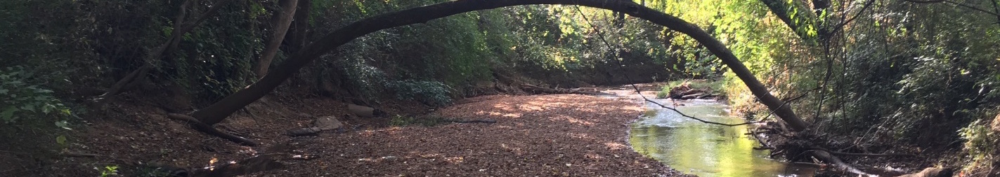

Faculty, staff and students have been collecting data on UGA's streams for many years. The streams serve as a natural laboratory for undergraduate classes like XX in which students collect YY to understand ZZ [Scott: can you fill in a specific example]. Some graduate courses conduct more in-depth studies; for example, graduate students in Amy Rosemond's Freshwater Ecosystems course have been monitoring numerous water quality parameters in Lake Herrick for the past three years, and using these data as the basis for annual reports.
As part of Watershed UGA Susan Wilde has expanded Lake Herrick monitoring, and a group of faculty and students led by John Dowd, Todd Rasmussen and David Radcliffe have established a set of real-time monitoring stations on the tributaries and outlet of the lake. The custom-designed instruments collect data on stream flow, temperature, conductivity, and other parameters and automatically upload it to campus computers. Watershed UGA intends to expand this monitoring network to other campus streams, including Lily Branch and Tanyard Branch.
This web site is intended to provide access to all of the types of data collected on campus streams, from intermittent student-collected samples to continuous real-time data. This site is a work in progress and data will be added periodically for several years starting in 2017.